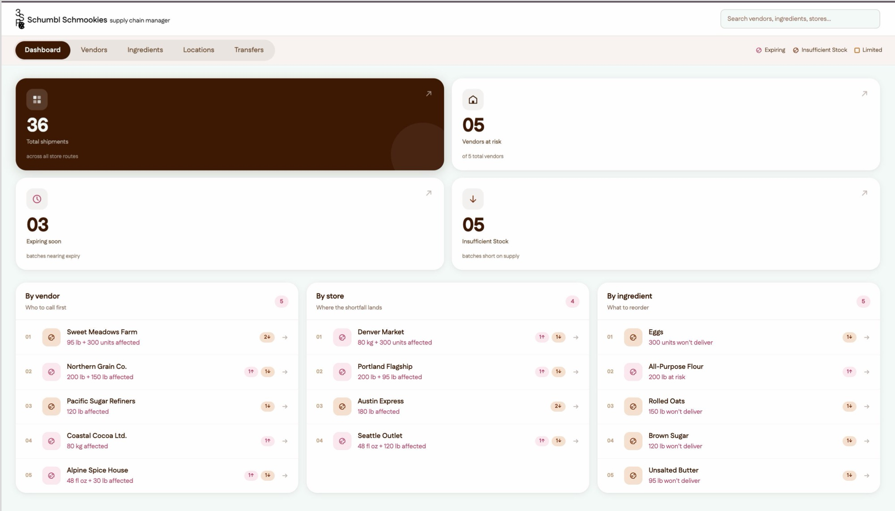
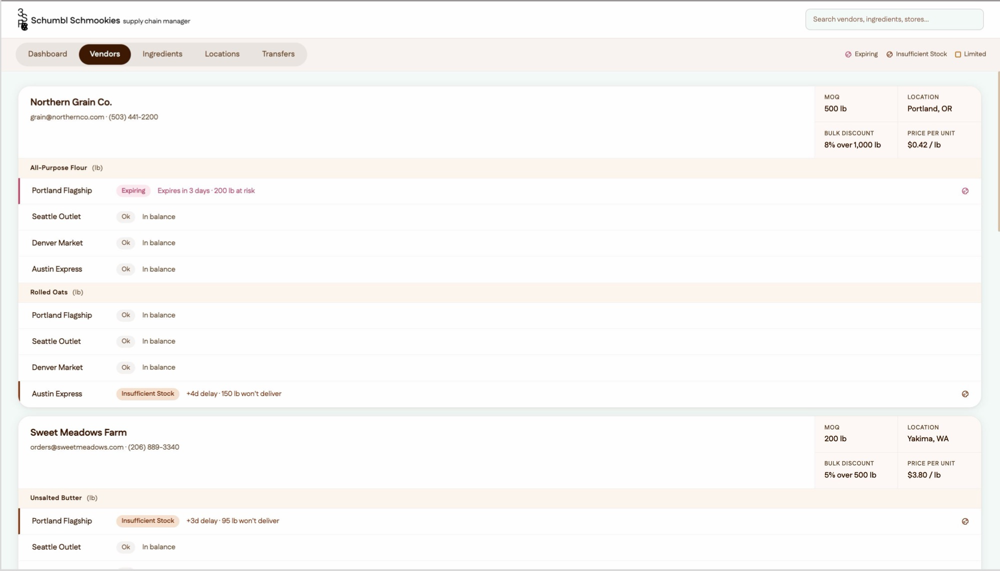
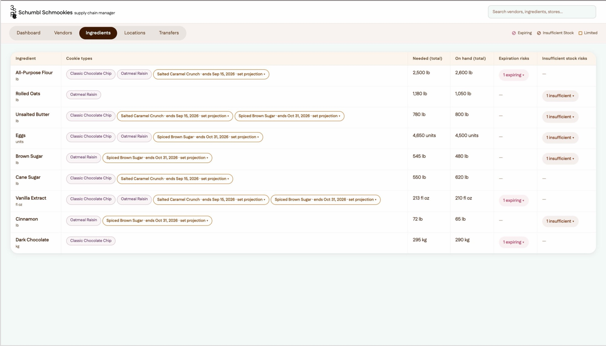
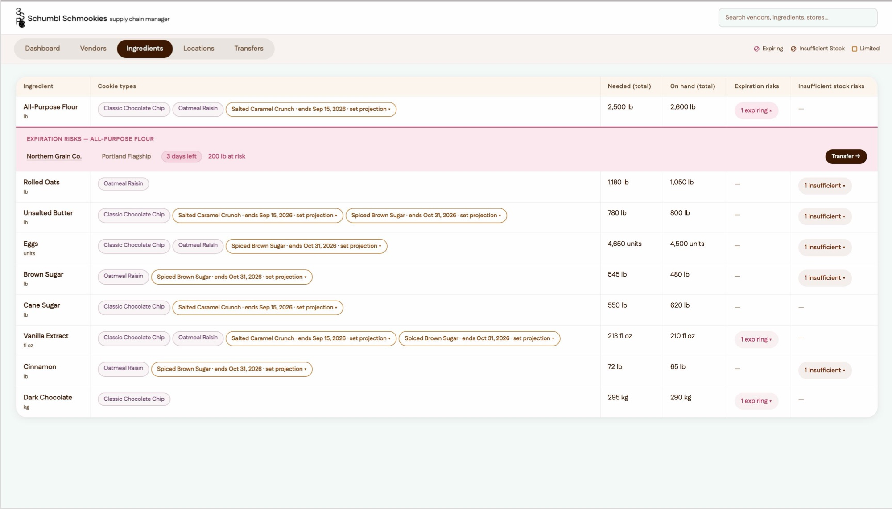
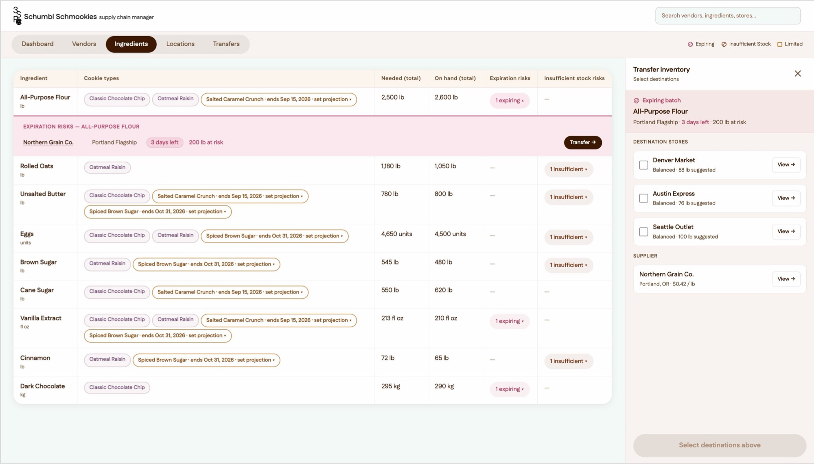
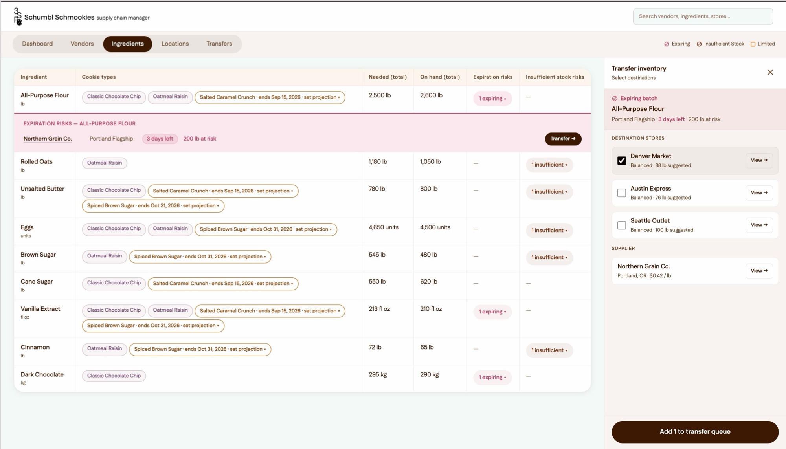
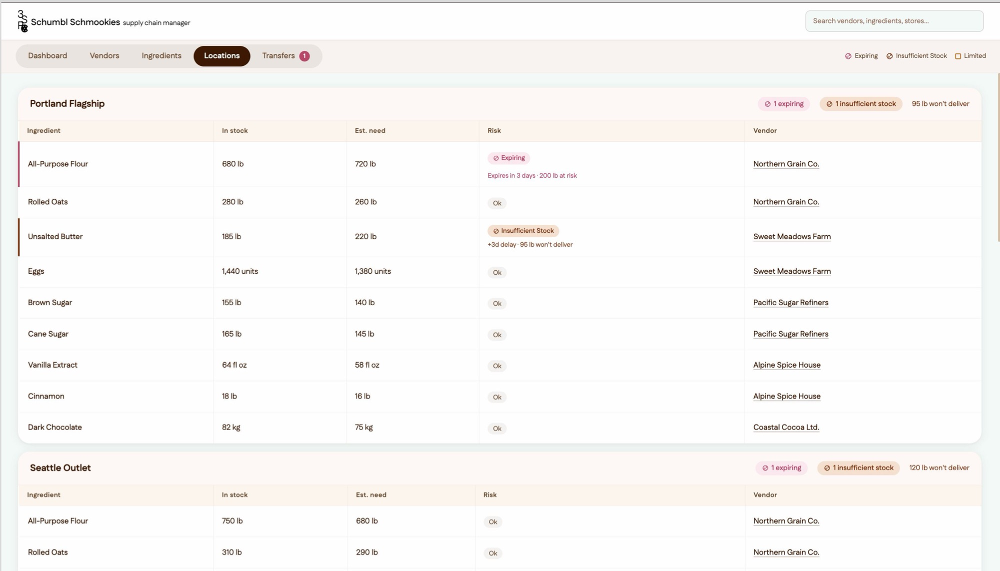
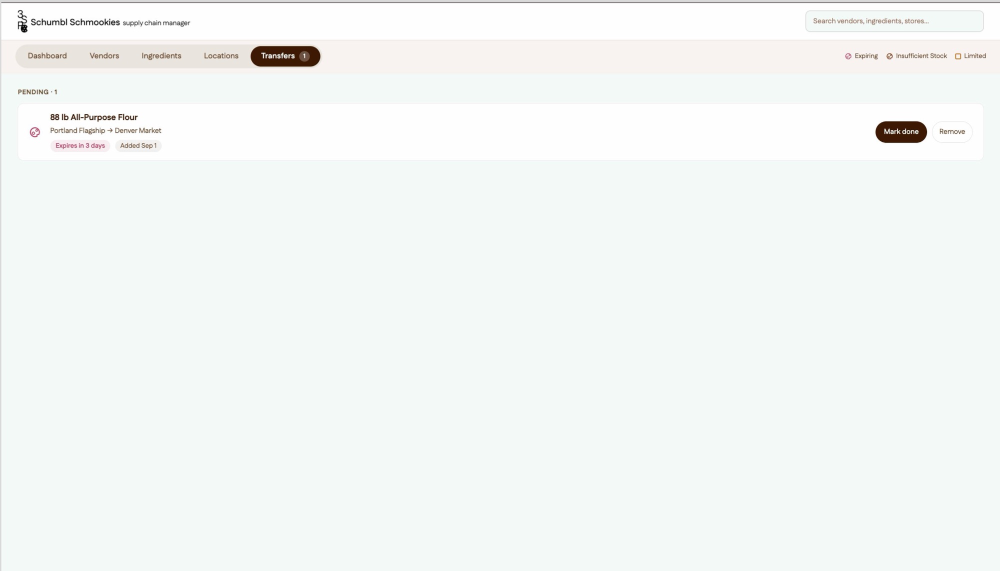
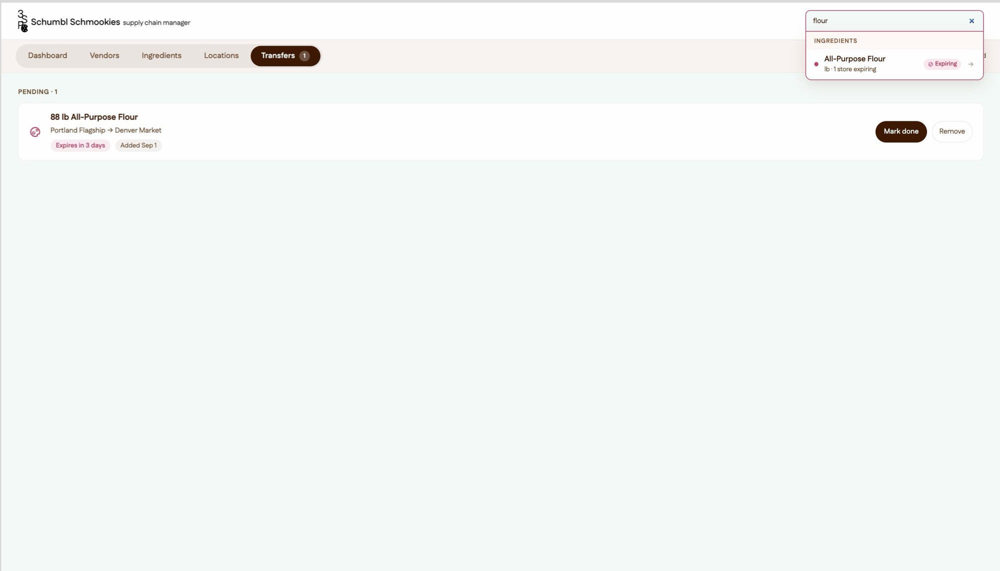
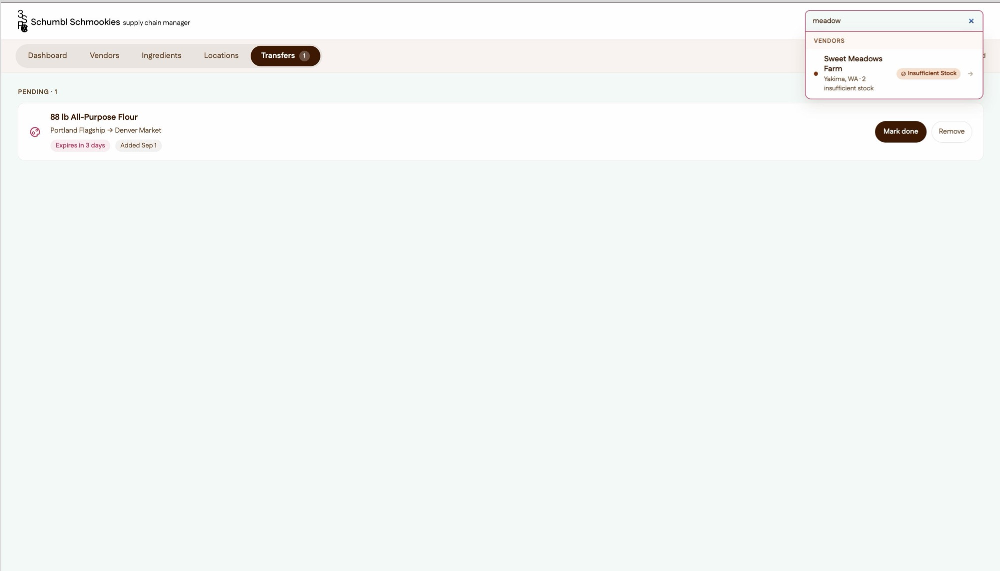

Schumbl Schmookies: Cookie Supply Chain Console — UI/UX, Branding, Prototyping
Software used: Figma, Figma Make, Tailwind CSS
Schumbl Schmookies is a nationwide cookie chain, and this is the supply chain console I designed for Jimmy, its supply chain manager. It follows ingredient quantities across vendors, bakery locations and recipes so that every bakery has what it needs, and it flags the batches that are expiring or short on supply before either one turns into a loss.

Live Prototype Link: https://plow-number-95700341.figma.site/
Process
I started from the brief: who the design is for, what it is being used for, and where. Breaking the manager’s needs down turned up a pattern — every one of them wanted the same three sets of data (vendors, locations, ingredients) but in a different format. That pointed to a table on desktop, with views you can switch between: one body of data seen from whichever angle the day calls for, on the largest frame available so the most of it is visible at once. I defined what each view had to carry, then drew the four screens as lo-fi wireframes.


Visual Design
Competitor research pointed at clean UI, sans serif typography and white backgrounds carrying bold colour.


I kept the clean layout and the sans serif — Fustat — but drew the palette from cookie companies instead: a warm espresso system with cranberry for expiring stock and burnt sienna for insufficient stock, and cookie illustrations standing in for icons. The logo abbreviates “Schumbl Schmookies supply chain manager” to 3S+P+C, with the cookie itself as the C.


User Flow & Features
Testing the first prototype turned up two gaps. There was no way to act on a risk once you had found it, so I added a transfer feature: an expiring badge opens a panel offering the nearest stores that are short on that ingredient, or the best vendor to contact, and anything you agree to joins a queue that reads as a task list. Searching was the other one — at this volume of data, scrolling to find a single vendor or ingredient was tedious — so I added a global search that takes you straight to the page and the record you were after.
Final Prototype
Built in Figma Make across seven drafts: the colour system, a card-based redesign, an accessibility and platform compliance pass, the transfer feature, global search, and a last design system refresh.








